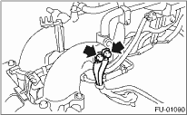

ENGINE (DIAGNOSTICS)(H4SO) > General Description
Before performing diagnostics, check the following item which might affect engine problems.
1. Measure the battery voltage and specific gravity of electrolyte.
Standard voltage: 12 V
Specific gravity: 1.260 or more
2. Check the condition of the main and other fuses, and harnesses and connectors. Also check for proper grounding.
Check if the engine ground terminal is properly connected to engine.
